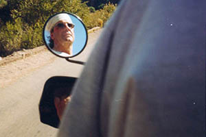
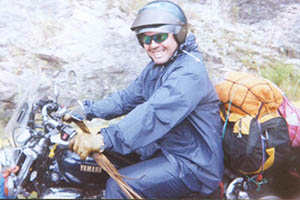
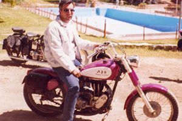
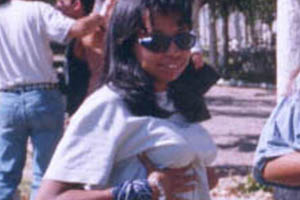
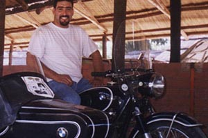
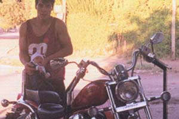

ASFALTO PUNTANO
Fredy
Vamos a empezar por la cabeza del club, el presidente, se llama Alfredo Ramón Alfredo Manceñido pero a todos nos gusta llamarlo Fredy a secas. Aunque se esfuerza duro todos los días de su vida no ha podido encontrar otra actividad dentro del club más que la de firmar en todos lados jaja.


Vivi
Para continuar la ronda seguimos con la primera dama Viviana Rosaura Fernández Piguillem, tiene virtudes como la de ser la Secretaria de Prensa y Difusión, cuya vocesita (en deciveles), que es superada solo por la de Sonia, puede oírse a leguas de distancia. Según cuentan, en Fraga, pueblo de donde es oriunda, mucho antes de que pongan teléfono, Vivi era el único medio de comunicación.
Turco
Siguiendo con los mandamás, le toca el turno Emilio Muzaber alias "El Turco", parte jocosa en toda publicación, y no se porqué (como dice el blues...) le hemos confiado las arcas de Asfalto (será porque es turco?)... pero por unanimidad es el tesorero. Se jacta de conocer a dedillo el código del Registro Civil ...pero yo tengo para agregar que tambien ostenta el récord insuperable de estadías en cuanto hospital te venga a la mente. (Será por eso que se lo llama por los suburbios puntanos "El Flaco Biónico"?).
Cabeza
Para termir la cosa esa a la que llaman comisión directiva... el sello de oro se lo lleva Juan Carlos Arce (recordado como cabeza) ocupando el puesto de Secretario de Actas y único golpeador de los socios del club... ( preguntar a Lea ) apodado por ello " Verdugo".
Lean
Leandro Hall, más conocido como Lea... el hombre con uno de los mas altos índices de caídas en el club jaja no es tan así (hay otro que le gana y es el Turco) pero adentro se va a explicar la más espectacular caída registrada de todos los tiempos .. ( incluso en el libro Guiness). Un Consejo: si le van a pedir que les arregle la moto ... dispongan de mucho pero muuuuuuuuuuucho tiempo.
Chiquita
Siguiendo la linea, le toca el turno a Sonia Otero mas conocida como "chiquita" aunque no diremos quien le puso el apodo, pidanle explicaciones ustedes, como también pueden pedirle que le explique cierto afiche que una vez supo hacer el Turco, algo referente a sus travesuras!
Capitán Gilera
Acá vamos a poner a Darío Martínez, ostentando su último y recién adquirido alias..." El Capitán Gilera". Podrían preguntarle si ese pelo es natural .. o usa gel.
Cuento Corto
Y ahora seguimos con el nenito del club (no por la edad) sino que como todo niño que no creció, es bastante caprichoso y a veces hasta mal llevado, él es conocido como "Cuento Corto" y se llama Ricardo Olguin, ésta personita se puede resumir en muy pocas palabras:
- Nunca está de acuerdo con nada...
- Nunca esta de acuerdo con nadie...
- Siempre pelea por todo...
En síntesis es un hincha %&$#&"$.
Pequeña Lulú
Continuamos con la última socia que entró al Club: Karyna Escudero. Apodada en un encuentro como "La pequeña Lulú". Difícimente se escuche en alguna reunión pero si está hablando con vos en privado agarrate! se rumorea por ahí que le anda prestando la Vulcan a un "chico amigo"...
Sodero
Paso a nombrar a Javier Pereyra. Todos le llaman "El Sodero" por su profesión, pero para mi le tendrían que decir "Mandraque" porque aparece y desaparece cuando se le canta!. Reconocerlo en la calle es fácil, si ven una cosa GRANDOTA con cara de cobrador de la mafia (aunque en realidad es mas bueno) conduciendo una camioneta de sodería solo tienen que gritar ¡JAVIER!
Victor Araguna
En todo grupo tiene que haber siempre uno que te cague la fruta!. Ese es indiscutidamente Victor Araguna, el motero del Duna blanco (ya que no saca la intruder ni para lavarla!) porque no habla nada, no se mete con nadie, no se le ven defectos, está de acuerdo con todo, no se le puede poner ni un APODO!.. prácticamente no existen fotos de él, así que a éste ni siquiera se le puede sacar el cuero.
